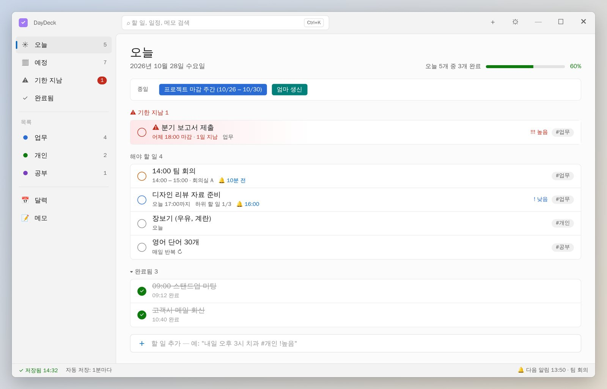
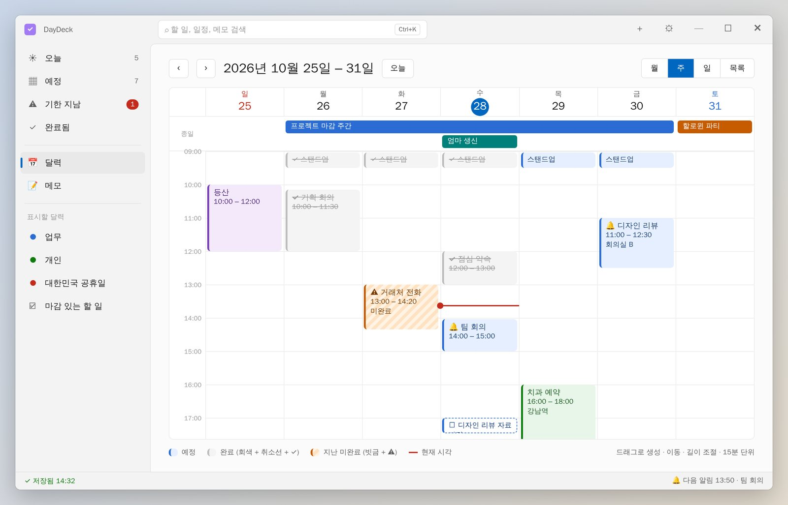
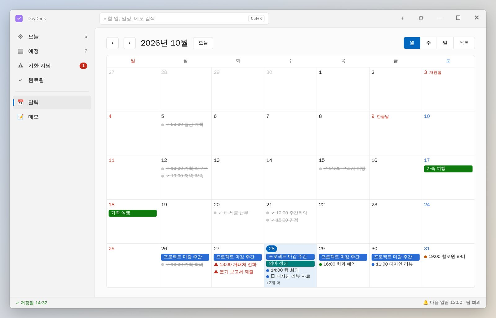
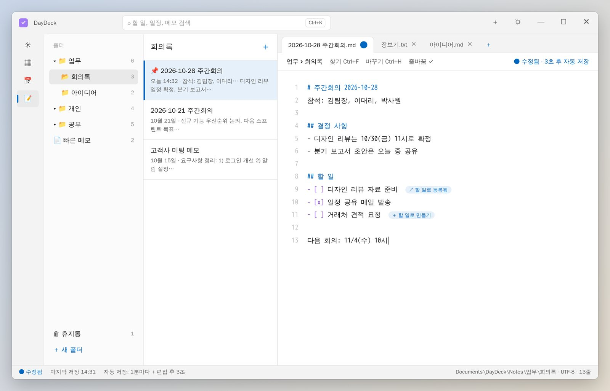
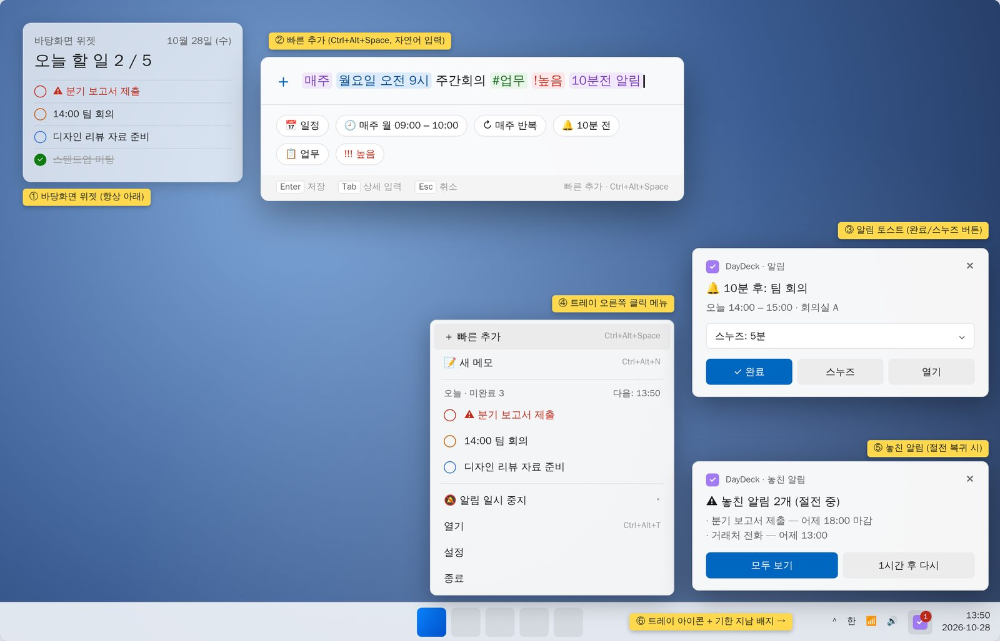

Windows 11 데스크톱 앱
DayDeck
할 일, 일정, 메모, 알림을
트레이 하나에서.
해야 할 일을 잊지 않게 하는 것이 목표입니다. 어디서나 단축키로 2초 안에 적고, 정해진 시각에 확실히 알립니다. 절전이나 재부팅으로 놓친 알림도 다시 보여 줍니다.
Windows 10 · 11계정 없이 로컬 저장버전 0.9.1

빠른 추가 · Ctrl+Alt+Space
말하듯 한 줄로 쓰면
알아서 나눠 담습니다
어떤 프로그램을 쓰다가도 단축키로 빠른 추가 창을 엽니다. 한국어 문장에서 날짜와 시각, 반복, 목록, 중요도, 알림을 찾아 각 칸에 채웁니다.
- 한국어 자연어 파서를 직접 만들고 126개 문장으로 테스트
- Enter로 바로 저장, Tab으로 상세 입력
가볍게, 확실하게
항상 켜 두는 프로그램이라 가벼워야 합니다
트레이, 알림 예약, 자동 저장만 늘 메모리에 두고, 창을 닫으면 화면 객체를 해제합니다. 알림은 주기적으로 확인하지 않고 다음 알림 시각 하나에만 타이머를 겁니다.
트레이에 있을 때 메모리
실행 후 트레이 아이콘이 뜨기까지
예정 시각 대비 알림 지연
갑자기 꺼져도 잃는 편집 내용 (편집 후 바로 저장)
설계 문서에 정한 목표치
주요 화면
오늘 할 일부터 메모까지 한 창에서
주 달력
시간 일정과 종일 일정을 한 주 단위로 봅니다. 끌어서 시간을 옮기고, 반복 일정과 한국 공휴일, 음력도 표시합니다.

월 달력
한 달 일정을 한눈에 보고, 일·주·월·목록 보기로 바꿔 가며 씁니다.

메모
폴더와 탭으로 정리하고, 메모 속 체크 항목을 바로 할 일로 만듭니다. 메모는 마크다운(.md) 파일 그대로 저장되어 VS Code나 Obsidian에서도 열립니다.

창을 열지 않아도
바탕화면 위젯에서 오늘 할 일을 체크하고, 트레이 메뉴로 빠르게 추가합니다. 알림에서 바로 완료하거나 미룰 수 있고, 절전에서 깨어나면 놓친 알림을 모아 보여 줍니다.

화면은 설계 단계에 그린 목업이며, 실제 앱과 세부가 다를 수 있습니다.
그 밖의 기능
매일 쓰면서 필요해진 것들
전체 검색
Ctrl+K 하나로 할 일, 일정, 메모를 한꺼번에 찾습니다.
반복 할 일
완료하면 다음 회차가 하위 할 일과 알림까지 그대로 새로 생깁니다.
주간업무보고
주차와 날짜를 자동으로 정하고, 지난주 계획을 이번 주 실적에 미리 채워 양식 그대로 복사합니다.
표 붙여 넣기
엑셀이나 구글 시트의 표를 메모에 붙여 넣으면 표로 보이고, 칸을 눌러 그 자리에서 고칩니다.
워크플로우 그림
손그림 느낌의 도형과 화살표로 업무 흐름을 그리고 PNG로 내보냅니다.
스티커 메모
메모를 바탕화면에 붙여 두면 위치와 색이 다음 실행 때도 그대로입니다.
메모 기록
10분마다 예전 내용을 남겨 두어 언제든 이전 버전으로 되돌립니다.
ICS 가져오기·내보내기
다른 달력의 일정을 가져오고, CSV로도 내보냅니다.
다크 모드와 글자 크기
테마와 글자 크기를 바꾸면 모든 창이 함께 맞춰집니다.
로컬 우선
모든 데이터는
내 PC의 폴더 하나에
서버도 계정도 필요 없습니다. 설정, 할 일과 일정, 메모, 백업이 모두 Data 폴더 하나에 들어 있어서 폴더째 복사하면 다른 PC로 옮겨집니다.
하루 한 번 zip으로 자동 백업하고, 데이터 폴더와 메모 폴더는 OneDrive나 Obsidian 보관함 같은 다른 위치로 옮길 수 있습니다.
만든 과정
설계 문서에서 Microsoft Store까지
기술 후보를 메모리와 생산성으로 비교해 C# .NET 10과 WPF를 골랐고, 단계별 목표(M1~M8)를 정해 하나씩 완성했습니다.
- M1 – M3
뼈대와 알림
SQLite 저장, 트레이, 자동 실행, 알림 엔진과 놓친 알림
- M4 – M5
달력과 메모
일·주·월 보기, 반복, 공휴일, 폴더·탭 메모 편집기
- M6 – M7
빠른 입력
전역 단축키와 한국어 자연어 파서, 전체 검색, 자동 백업
- M8 · 0.7 – 0.8
확장
바탕화면 위젯, 스티커 메모, 워크플로우 그림
- 0.9
DayDeck 출시
새 이름, 설치 프로그램, Microsoft Store 등록
화면까지 자동 테스트
GitHub Actions가 단위 테스트에 더해 실제 exe를 실행하고 UI 자동화로 화면을 조작해 검사한 뒤 스크린샷을 남깁니다. 설치 프로그램과 MSIX 패키지도 직접 설치해 시험합니다.
버전만 올리면 배포
버전을 올려 main에 합치면 CI가 릴리스와 설치 파일, Store용 MSIX 패키지를 만듭니다.
두 가지 배포판
Store판은 Store가 업데이트하고, 설치·zip판은 앱이 새 버전을 확인해 SHA-256 검증 후 스스로 바꿉니다.